The global energy transition has fundamentally repositioned Battery Energy Storage Systems (BESS) from niche grid-support components to the backbone of modern renewable infrastructure. This rapid expansion, however, has exposed significant technical vulnerabilities regarding the safety of high-energy-density lithium-ion chemistries. As utility-scale systems scale into the hundreds of megawatt-hours, the potential for catastrophic thermal runaway events, toxic off-gassing, and vapour cloud explosions (VCE) has necessitated a sophisticated, multi-layered approach to explosion control.
The design and installation of BESS explosion control systems are governed by various codes and standards, such as NFPA 855, NFPA 68, and NFPA 69. NFPA 855 is the primary standard for the installation of fixed ESS and provides minimum requirements for mitigating hazards associated with BESS, including ventilation and explosion control. NFPA 855 requirements include either explosion protection systems in accordance with NFPA 69 or explosion venting protection systems in accordance with NFPA 68.
While these codes successfully provide regulation for BESS, they are not always adequate to address some of the specific challenges of BESS deflagration control, as BESS are rapidly evolving and diversifying in terms of technology, size, configuration, and application. In addition, existing deflagration control systems may not be practical, effective, or reliable for some BESS because they may not account for the complex and dynamic phenomena involved in a BESS deflagration or the diversity of TR events, including how many cells may be involved simultaneously or in total throughout the TR propagation process. Therefore, more research and development in this area, as well as more testing and validation of BESS deflagration control systems, are needed.
BESS Design Classifications
Walk-in and non-walk-in
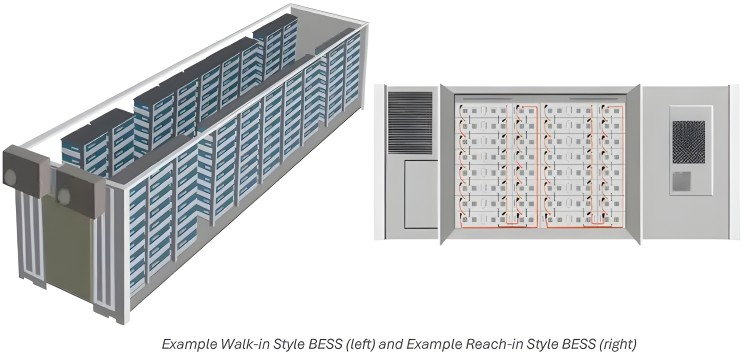
Modular cabinet and standard container applications
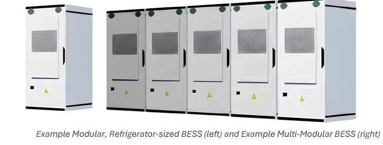
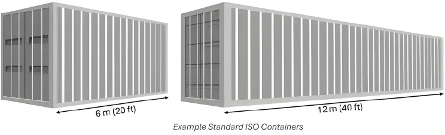
Current Explosion Mitigation Standards
NFPA 855: One of the primary goals of NFPA 855, Standard for the Installation of Stationary Energy Storage Systems, is to provide minimum requirements for mitigating hazards associated with ESS. Because NFPA 855 applies to a wide range of ESS, it specifies ventilation requirements during battery charging that produces exhaust gases during this phase under normal operation. However, LIBs do not exhibit this behavior, so the more applicable hazard mitigation guidance provided by NFPA 855 is advice for abnormal situations, such as TR. In fact, NFPA 855 requires that the charging or discharging of LIB batteries be performed by evaluated equipment or approved methods to ensure that the batteries are operating under safe conditions to prevent TR.
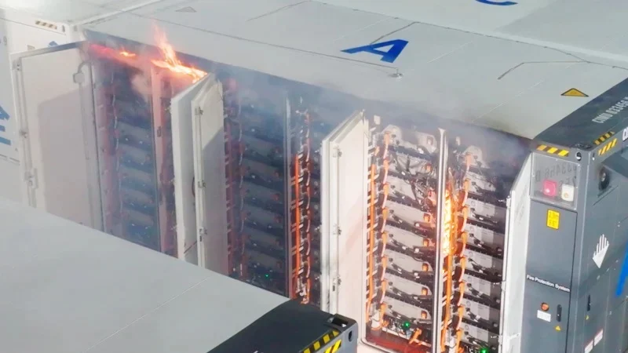
However, despite best efforts, given the number of batteries used in BESS installations, it is inevitable that a TR event will occur at some point. While TR can result in a variety of hazards, the focus here is on the potential for a TR event to result in an explosion or deflagration event. To mitigate this hazard, NFPA 855 references NFPA 68, which specifies requirements for deflagration ventilation and protection, and NFPA 69, which specifies requirements for gas ventilation and explosion prevention.
NFPA 68: NFPA 68, Standard for Deflagration Ventilation and Protection, governs the installation and use of equipment and systems that vent combustion gases and pressures generated by a deflagration within an enclosure to minimize structural and mechanical damage. Systems implemented under this standard are considered passive because they mitigate the effects of an explosion if one occurs, rather than attempting to prevent an explosion in the first place. These types of systems can also be considered control strategies because they control the outcome of a deflagration.
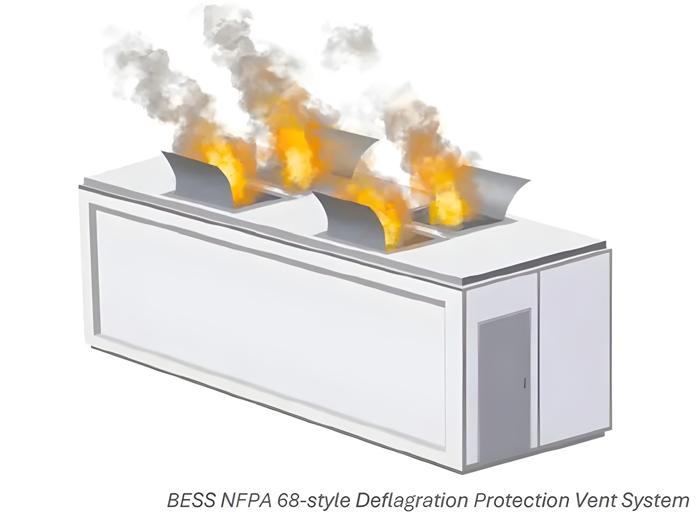
Compliance with the standard involves implementing deflagration panels and specialized vents “designed to fail at pressures below the mechanical strength of the enclosure, thereby releasing rapidly expanding gases before pressures reach explosion levels and cause greater damage. NFPA 68 also states that panels and vents should be located so they direct the exhausted material in a direction that causes the least damage. Typically, the preferred location for deflagration venting is the top of the enclosure to minimize the effects of fire and projectiles on nearby exposures.
NFPA 69: NFPA 69, the standard for explosion proof systems, specifies requirements for the installation of explosion proof systems in enclosures containing flammable gases, vapors, mists, dusts, or combined mixtures. Implementation of this standard is considered a preventative strategy because the goal is to prevent a deflagration event in the first place, which is typically accomplished through gas detection and ventilation to control gas concentrations and prevent the accumulation of explosive atmospheres.
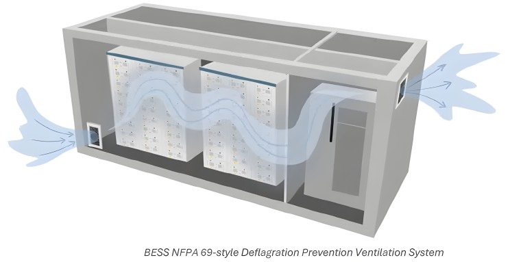
The requirement of NFPA 69 is that flammable gas concentrations in a BESS enclosure should be maintained below 60% of the LFL if gas levels are monitored by a SIL 2 system, and below 25% of the LFL if not. HVAC systems are often used to provide ventilation of unignited gases. However, if the gases produced by the battery are corrosive and are subject to NFPA 72 or other safety requirements, a dedicated ventilation system is often required. Other systems that can provide ventilation include door opening mechanisms, also known as performance systems, which can remotely open exterior doors from a safe distance during a fire event.
Variables Affecting Deflagration Occurrences
These variables can be divided into three categories: LIB characteristics, enclosure characteristics, and environmental factors.
LIB Characteristics Affecting Explosion Risk
As discussed above, several characteristics of LIB cells used in BESS affect the risk of explosion. These characteristics can include defects in the cell but are primarily related to the outgassing released from the cell during a TR event, including the composition of the gas mixture and the volume of gas. Cell defects are noteworthy because these defects can cause the cell to enter a TR. For example, internal short circuits can occur due to abnormal dendritic growth within the cell leading to TR. Other forms of electrical abuse, as well as thermal or mechanical abuse, can also lead to TR. Once a TR occurs, not only is a flammable gas mixture released from the cell, as discussed subsequently, but there is now an ignition source in the form of hot cell surfaces or sparks of molten material ejected from the cell.
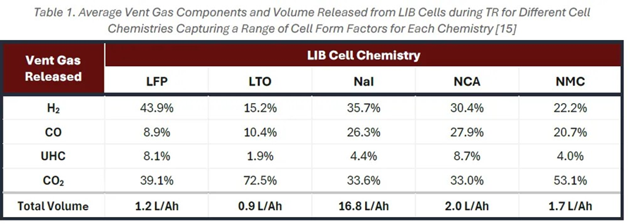
The gas mixture exhausted from a LIB cell is composed of gases produced by chemical reactions within the cell during TR, including decomposition of the electrolyte and solid electrolyte interface (SEI) layers and destabilization of the cathode and anode; vaporized electrolyte is also produced.
The effect of the concentration of gases in the space on the equivalence ratio also affects how rich or lean the flame burns, which in turn determines the flame temperature. In addition, the volume of gas released also affects the severity of the deflagration by affecting the maximum explosion pressure, or the peak pressure reached by the gas mixture burning, which is directly dependent on the amount of flammable gas present in the space.
BESS Enclosure Characteristics Affecting Explosion Risk
Enclosure characteristics that affect the likelihood and severity of an explosion or deflagration event in a BESS enclosure include the distance a flame can accelerate within the container, the amount of free air within the container, the ventilation devices used, and other installed components.
In general, the most commonly used ISO containerized BESSs today have a free air volume of approximately 20% of their total volume; nonetheless, companies like AIG specify a minimum distance of 3 meters (10 feet) between battery racks to minimize fire spread. However, as higher energy density systems become more popular, this value will likely decrease over time, resulting in systems that are more susceptible to causing combustible gas concentrations above the LFL after a TR event.
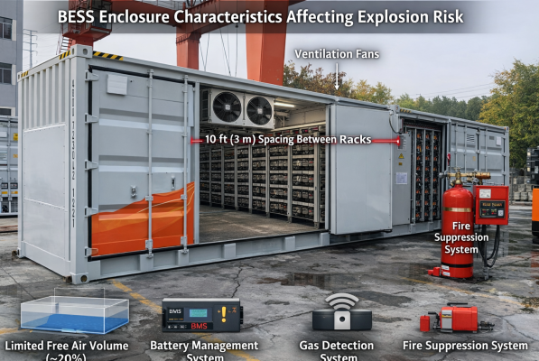
Other installation components that are critical to reducing explosion/deflagration hazards include battery protection systems that monitor and stop short circuit events, operating environmental management systems that control dust levels, humidity and temperature within the container, integrated BESS monitoring and control systems, and fire suppression systems.
Environmental Factors Affecting Explosion Risk
Variability in various environmental factors can lead to events that initiate or exacerbate a BESS deflagration. Some examples of external factors that have caused BESS failures in the past, including deflagration events or fires, include power surges that cause failures in prevention and/or protection systems, operating environments that may be prone to temperature or humidity fluctuations and dust accumulation that causes degradation of BESS components, errors during BESS installation, inadequate prevention and/or protection systems, and LIB manufacturing defects that cause LIB overheating.
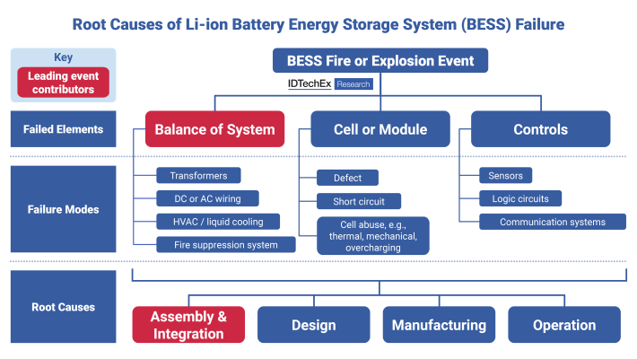
Electrical faults, such as voltage imbalance, ground faults, or short circuits, can cause overcharging, overheating, or arcing of battery modules, leading to TR and its propagation. Another environmental factor is mechanical abuse, such as impact, penetration, or vibration, which can damage the battery structure, causing internal short circuits or rupture of the battery casing, which can also lead to TR and its propagation. Another problem can be inadequate fire suppression systems, such as gas fire suppression systems, which can extinguish flames but cannot suppress TR or its propagation.
Challenges of Current Mitigation Standards
Current standard deflagration prevention and protection practices for BESS face several difficulties. These include some TR scenarios that may lead to deflagration in BESS that are not necessarily considered by NFPA 855, NFPA 68, or NFPA 69, and the unpredictability of prompt versus delayed ignition leading to a deflagration.
Weaknesses of Standard Mitigation Designs
While NFPA 855 succeeds in providing a consistent framework for BESS hazard mitigation, such as explosions or deflagrations, it is also important to consider NFPA 855’s shortcomings. For example, given the rapid pace of technological innovation for LIBs and BESSs, NFPA 855 may not keep up with evolving technology. In this regard, Close et al. note that “While battery development has been rapid, the development of codes and standards has lagged, despite their critical importance for safety, reliability, and interoperability. However, they are primarily focused on generating data and pass/fail criteria, so testing alone is not advisable.
UL 9540A and other standards provide different tests, but lack guidance for understanding energy storage system risks, design, and mitigation measures. Some codes and standards have difficulty keeping up with evolving technology and ignore key inherent hazards, such as thermal runaway and gas generation during heat propagation.” As a result, NFPA 855 may have difficulty accounting for new battery chemistries or changes in BESS configurations that will become more prevalent in the marketplace. It should also be considered that BESS facilities are becoming larger and more complex, which may make it difficult for current recommendations to account for all the nuances associated with these larger systems.
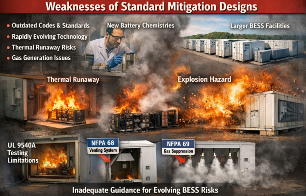
Within NFPA 855, there are also some challenges with the recommended explosion protection systems specified in NFPA 69 and the explosion protection systems specified in NFPA 68. On the one hand, NFPA 68 provides well-established explosion protection guidance in the form of deflagration ventilation, where the ventilation system relieves pressure by actuating at a pressure below the enclosure strength, and NFPA 69 recommends a widely accepted explosion protection method in the form of a ventilation system where the flammable gas concentration is controlled and maintained below 25% of the LFL.
NFPA 68 Approach
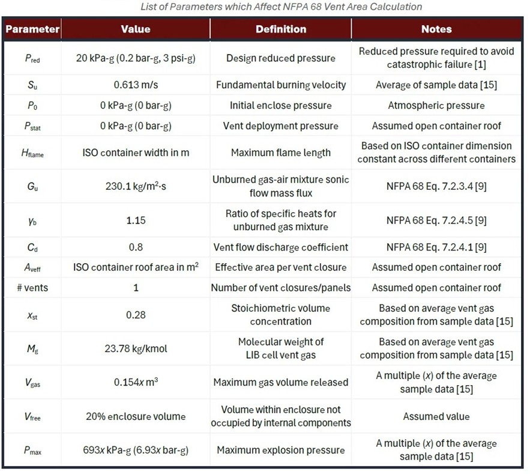
NFPA 69 Approach
NFPA 69 recommendations for explosion protection design may present similar challenges as the deflagration protection design recommended by NFPA 68. Although NFPA 69 specifies a maximum combustible gas concentration of 25% of the LFL or 60% of the LFL for SIL 2 monitored systems, and a minimum ventilation rate, these design parameters may not be applicable to every BESS installation.
Improving Mitigation Approaches
Modeling Recommendations
Modeling can be an important tool in the design and evaluation of BESS deflagration control systems because it can provide insight into the physical and chemical processes involved in BESS deflagrations, as well as the performance and effectiveness of different deflagration control strategies. In addition, modeling a BESS deflagration and its control requires accurate and reliable input data and boundary conditions, such as gas composition, concentration, and flammability, enclosure geometry and strength, ventilation (if included), and certain environmental factors.
The analytical methods used in standards such as NFPA 68 and NFPA 69 are based on simplified mathematical equations that describe the BESS deflagration process. Analytical methods do have the advantage of being fast and easy to implement; however, they are also limited by the assumptions and simplifications made to obtain the mathematical solutions, such as the ideal gas law, complete mixing, constant volume, uniform temperature, and adiabatic expansion. As a result, analytical methods are unable to capture the complex and dynamic phenomena involved in BESS deflagration and its control.
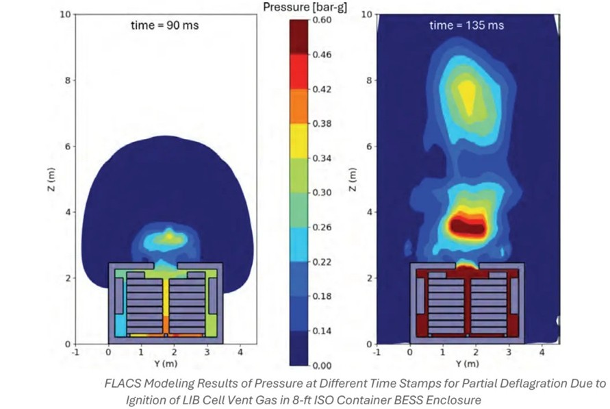
Therefore, other useful modeling tools are numerical methods and simulations, such as computational fluid dynamics (CFD), which are based on the solution of discrete partial differential equations and can be more accurate and comprehensive than analytical methods by considering the additional complexity and uncertainty of the problem. Numerical methods and simulations can also use different levels of detail or resolution for different phenomena or areas.
Example of CFD FLACS simulation is shown in Figure 16, which shows the results of internal modeling of the pressure evolution process in the BESS enclosure of an 8-foot ISO container after the exhaust gas released by the LIB battery ignites and causes a partial deflagration. One of the most important applications of computational fluid dynamics in BESS deflagration mitigation systems is the creation of gas dispersion models that can provide detailed information on LIB cell exhaust gas accumulation during TR, including how the gas accumulates within the BESS enclosure and where it is most concentrated, which can indicate the optimal location of exhaust fans used in the ventilation system.
Additional Considerations for Deflagration Protection and Prevention Systems
The use of vent panels in a deflagration protection system should be carefully considered. An important parameter is the number of vent panels included in the system and whether the shell doors are designed as openable vent panels.
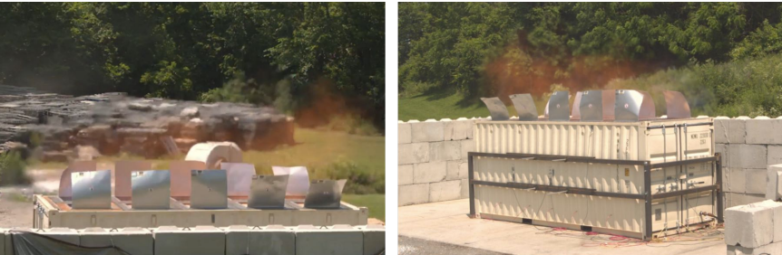
Deflagration protection in BESS requires careful vent panel design, including the number, placement, and whether doors function as vents. Doors are often structural weak points, and improper venting can cause severe overpressure and explosions. Enclosure strength must be clearly defined and tested to ensure vents are properly sized, as ISO containers often lack verified pressure thresholds. Vent panel opening angles also affect explosion severity, but deflagration can still occur in all cases. Additionally, ventilation systems must consider gas buildup, uneven dispersion, and rapid thermal runaway events, as standard LFL limits may not always prevent explosions. Proper modeling, gas monitoring, and tailored ventilation design are essential.
Suppression System Interactions
Suppression systems significantly affect deflagration behavior in BESS incidents. Gas systems (e.g., CO₂, aerosols) may suppress flames but do not stop thermal runaway (TR) and can increase deflagration risk by allowing flammable gases to accumulate. Water-based systems are generally preferred because they provide cooling, which helps limit TR propagation, but they cannot fully prevent delayed ignition and also pose risks such as electrical shorts and contaminated runoff. No single suppression method is ideal—system performance depends on BESS design and should be evaluated alongside other mitigation strategies.
DEFLAGRATION MITIGATION BESS DESIGN PROCESS (Deflagration Mitigation Design Process)
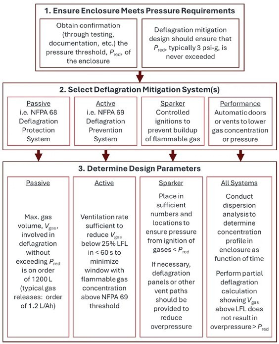